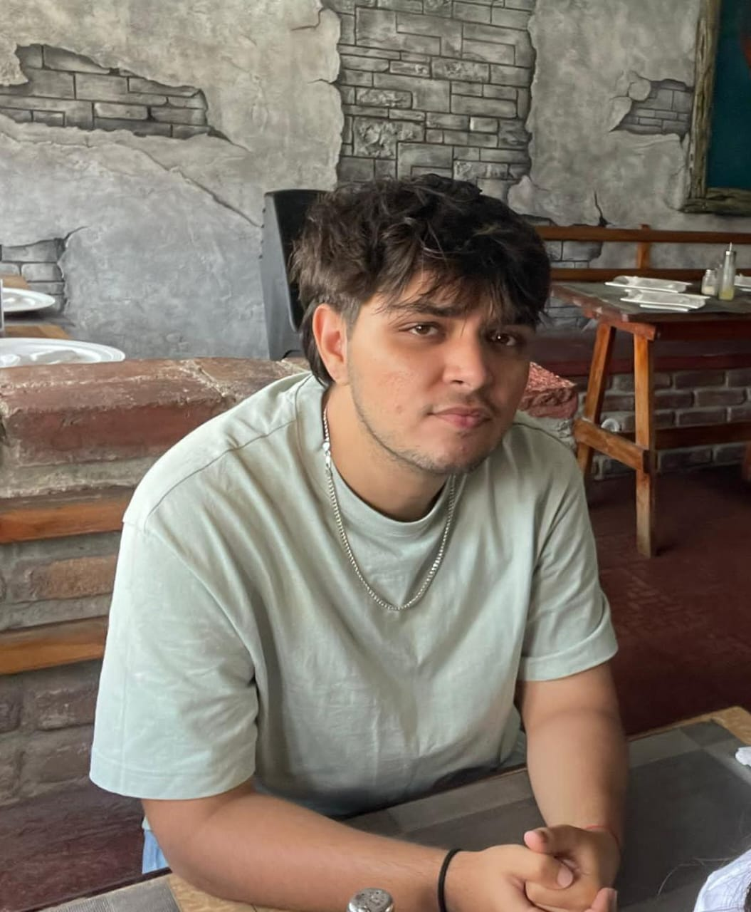

Currículum Vitae

Perfil Profesional
Estudiante de Ingeniería Informática apasionado por el desarrollo web y las bases de datos. Buscando siempre aprender nuevas tecnologías y aplicar buenas prácticas de accesibilidad.
Habilidades Técnicas
Java:
Desarollo Web (HTML/CSS):
Python:
Bases de Datos SQL:
Experiencia
- Proyecto de Desarrollo Web (UCLV)
- Desarrollo front-end de un sistema interno para la facultad, enfocado en accesibilidad y semántica (Ficticio).
- Prácticas de Laboratorio
- Configuración de entornos LAMP y despliegue de aplicaciones web básicas (Ficticio).
Formación Académica
- Ingeniería Informática - Universidad Central "Marta Abreu" de Las Villas
- Preuniversitario - IPVCE Ernesto Guevara (2020 - 2023)
Idiomas
| Idioma | Nivel | Certificación |
|---|---|---|
| Español | Nativo | N/A |
| Inglés | Básico (A2) | Examen de suficiencia UCLV |